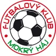

Posledný zápasU13 Mladší žiaci
 TJ Družstevník Kunovdomáci
TJ Družstevník KunovdomáciVýsledok 5:0
Prehrapolčas 1:0
Návrh webu · nie je to oficiálna stránka klubu
Futbal od roku 1932Hlboké, okres SenicaSezóna 2026/27 · číslo 17
Futbalové noviny z obce, kde sa v roku 1843 dohodli na spisovnej slovenčine
IV. liga mladších žiakov U13 ObFZ Senica, 11. miesto z 11
Posledný zápasU13 Mladší žiaci
TJ Družstevník KunovdomáciVýsledok 5:0
Prehrapolčas 1:0
1–0–11výhry, remízy a prehry vo všetkých súťažiach, skóre 21:101
IV. liga mladších žiakov U13 ObFZ Senica
| # | Tím | Z | V | R | P | Skóre | B |
|---|---|---|---|---|---|---|---|
| 1 | 13 | 13 | 0 | 0 | 78:11 | 39 | |
| 2 | 12 | 9 | 0 | 3 | 69:21 | 27 | |
| 3 | 13 | 8 | 0 | 5 | 75:36 | 24 | |
| 4 | 13 | 8 | 0 | 5 | 59:39 | 24 | |
| 5 | 13 | 8 | 0 | 5 | 69:39 | 24 | |
| 6 | 13 | 7 | 2 | 4 | 61:29 | 23 | |
| 7 | 13 | 6 | 2 | 5 | 37:34 | 20 | |
| 8 | 12 | 4 | 0 | 8 | 29:63 | 12 | |
| 9 | 12 | 3 | 0 | 9 | 28:35 | 9 | |
| 10 |  OFK Mokrý Háj | 13 | 1 | 0 | 12 | 12:127 | 3 |
| 11 | 13 | 1 | 0 | 12 | 21:104 | 3 |
Hráči, ktorí v kalendárnom roku 2026 nastúpili alebo boli v nominácii na zápas (podľa Sportnetu). Pri mládeži uvádzame len mená.